Career
clubs in Cristiano played:
- Andorinha (1992-1995)
- Nacional (1995-1997)
- Sporting C.P Youth Academy (1997-2002)
- Sporting CP (2002-2003)
- Manchester United (2003-2009)(2021-2022)
- Real Madrid (2009-2018)
- Juventus (2018-2021)
- Al- Nassr (2023-2026)
His Starting Career:
He began playing football at age 8, when he joined amateur youth team Andorinha. In 1995, he signed with the local club Nacional, and was then signed by Sporting CP. He started playing soccer when he was 9 years old. At age 15 Ronaldo was diagnosed with a heart condition. He needed surgery, but he was sidelined only briefly and made a full recovery. Ronaldo debuted on Sporting Clube de Portugal's first team in 2002. As a child, Ronaldo played for Andorinha from 1992 to 1995, where his father was the kit man, and later spent two years with Nacional.
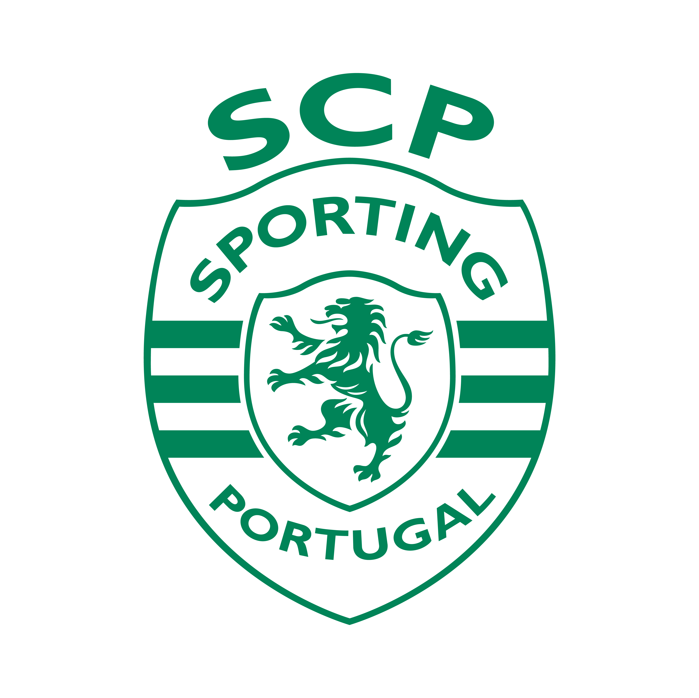In 1997, aged 12, he went on a three-day trial with Sporting CP, who signed him for a fee of £1,500. His first professional debut was on 20 August 2003, against Kazakhstan. His position as a player was Forward in the match. His career turning point was in 2004 -2005 Season of the FA cup final, he scored 4 goals against Arsenal while playing for the Manchester United. Ronaldo began his senior career with Sporting CP, before signing with Manchester United in 2003, winning the FA Cup in his first season.
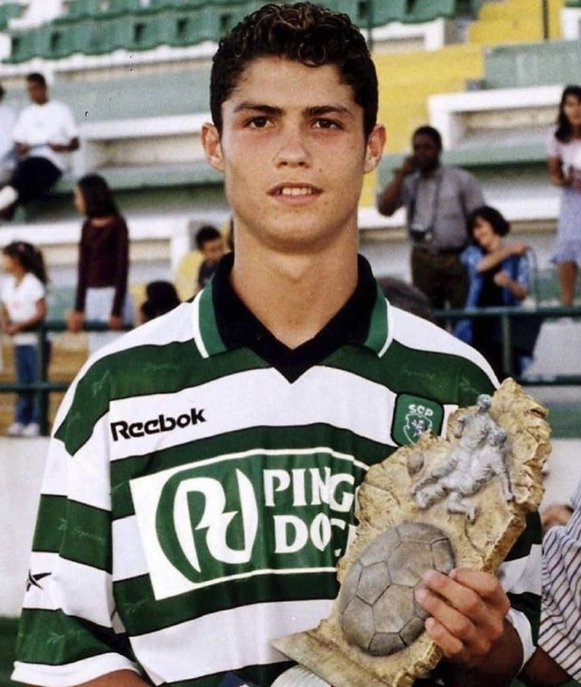At age 23 he won his first Ballon d'Or. Ronaldo was the subject of the then-most expensive association football transfer when he signed for Real Madrid in 2009 in a transfer worth €94 million (£80 million). He became a key contributor and formed an attacking trio with Karim Benzema and Gareth Bale which was integral to the team winning four Champions League wins from 2014 to 2018. During this period, he won back-to-back Ballons d'Or in 2013 and 2014, and again in 2016 and 2017, and was runner-up three times behind Lionel Messi, his perceived career rival. He also became the club's all-time top goalscorer and the all-time top scorer in the Champions League, and finished as the competition's top scorer for six consecutive seasons between 2012 and 2018. With Real Madrid, Ronaldo won four Champions Leagues, two La Liga titles, two Copas del Rey, two UEFA Super Cups and three Club World Cups.
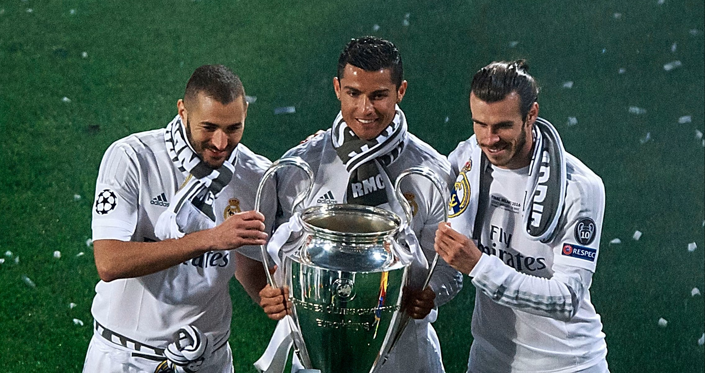In 2018, he signed for Juventus in a transfer worth an initial €100 million (£88 million), the most expensive transfer for an Italian club and for a player over 30 years old. He won two Serie A titles, two Supercoppa Italiana trophies and a Coppa Italia, became the inaugural Serie A Most Valuable Player and became the first footballer to finish as top scorer in the English, Spanish and Italian leagues.
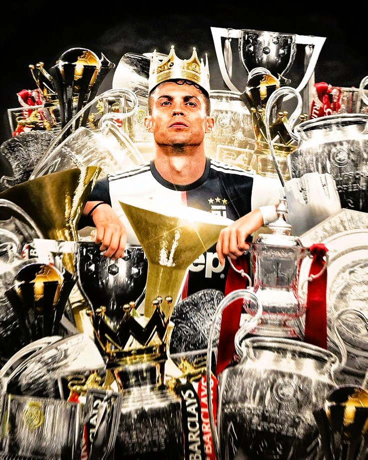English Professional Football Club
Manchester United
 At age 16, Ronaldo was promoted from Sporting's
youth team by first-team manager
Laszlo Boloni,
who was impressed with his dribbling.
He subsequently became the first player to
play for the club's
under-16, under-17 and under-18 teams,
the B team and the first team, all within a single season.
Manchester United manager 'Alex Ferguson'
was determined to acquire Ronaldo on a permanent move urgently,
after Sporting defeated United 3-1 at the
inauguration of the Estadio Jose Alvalade in August 2003.
Initially, Manchester United had planned to
sign Ronaldo and loan him back to Sporting for a year.
Having been impressed by him, the
Manchester United players urged Ferguson to sign him. After the game,
Ferguson agreed to pay Sporting
£12.24 million
for what he considered to be
"one of the most exciting young players"
he had ever seen.
A decade after his departure from the club,
in April 2013, Sporting honoured Ronaldo
by selecting him to become their 100,000th member.
Ronaldo's move to Manchester United was
completed on 12 August 2003,
and made him the
first Portuguese player
to sign for the club.
At age 16, Ronaldo was promoted from Sporting's
youth team by first-team manager
Laszlo Boloni,
who was impressed with his dribbling.
He subsequently became the first player to
play for the club's
under-16, under-17 and under-18 teams,
the B team and the first team, all within a single season.
Manchester United manager 'Alex Ferguson'
was determined to acquire Ronaldo on a permanent move urgently,
after Sporting defeated United 3-1 at the
inauguration of the Estadio Jose Alvalade in August 2003.
Initially, Manchester United had planned to
sign Ronaldo and loan him back to Sporting for a year.
Having been impressed by him, the
Manchester United players urged Ferguson to sign him. After the game,
Ferguson agreed to pay Sporting
£12.24 million
for what he considered to be
"one of the most exciting young players"
he had ever seen.
A decade after his departure from the club,
in April 2013, Sporting honoured Ronaldo
by selecting him to become their 100,000th member.
Ronaldo's move to Manchester United was
completed on 12 August 2003,
and made him the
first Portuguese player
to sign for the club.
His transfer fee made him, at that time, the most expensive teenager in English football history. Ronaldo scored his first goal for Manchester United with a free-kick in a 3-0 win over Portsmouth on 1 November. Three more league goals followed in the second half of the campaign, the last of which came against Aston Villa on the final day of the season, a match in which he also received the 'first red card' of his career. Ronaldo ended his first season in English football by scoring the opening goal in United's 3-0 win over Millwall in the 2004 FA Cup Final, earning his first trophy. Ronaldo scored United's 1,000th Premier League goal on 29 October 2004. Ronaldo won his second trophy in English football, the Football League Cup, after scoring the third goal in United's 4-0 final win over Wigan Athletic. Although his World Cup altercation with Rooney resulted in Ronaldo being booed throughout the 2006-07 season, it proved to be his breakout year, as he broke the '20-goal barrier' for the first time and won his 'first Premier League title'.
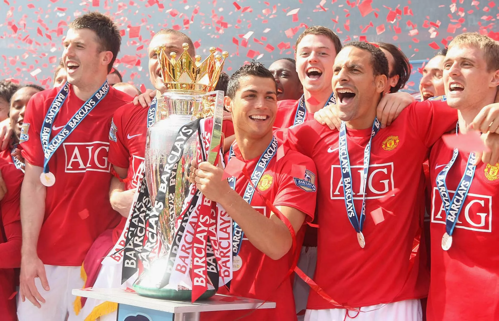An important factor in this success was his one-to-one training by first-team coach Rene Meulensteen, who taught him to make himself more unpredictable, improve his teamwork, call for the ball and capitalise on goalscoring opportunities rather than waiting for the chance to score the aesthetically pleasing goals for which he was already known. He scored three consecutive braces at the end of December, against Aston Villa (a win that put United on top of the league). Ronaldo was named the Premier League Player of the Month in November and December, becoming only the third player to receive consecutive honours. He also helped Manchester United reach the 2007 FA Cup Final, but the final against Chelsea ended in a 1-0 defeat. Ronaldo scored the only goal in the Manchester derby on 5 May (his 50th goal for the club), as United won their 'first league title in four years'. As a result of his performances, he amassed a host of personal awards for the season. He won the Professional Footballers Association (PFA) Player's Player award, 'Fans Player' and 'Young Player of the Year awards', as well as the Football Writers' Association's Footballer of the Year award, becoming the "First player to win all four main PFA and FWA honours". His wages were raised to £120,000 a week as part of a five-year contract extension. Ronaldo was named runner-up to Kaka for the 2007 Ballon d'Or, and came third, behind Kaka and Lionel Messi, in the running for the 2007 FIFA World Player of the Year award.
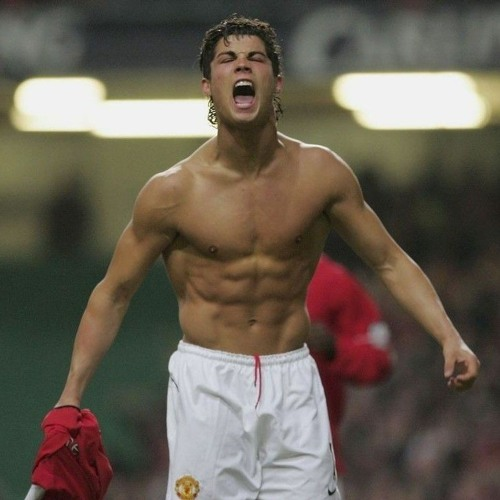Ronaldo scored his first hat-trick for Manchester United in a 6-0 win against Newcastle United on 12 January 2008, which put United top of the league table. On 19 March, he captained Manchester United for the first time in a home win over Bolton and scored both goals in a 2-0 win. His second goal was his 33rd of the campaign, surpassing George Best's total of 32 goals in the 1967-68 season, setting the club's new single-season record by a midfielder. His 31 league goals earned him the Premier League Golden Boot, as well as the European Golden Shoe, which made him the first winger to win the latter award. He additionally received the PFA Player, Player of the Year and FWA Footballer of the Year awards for the second consecutive season. United reached the final against Chelsea in Moscow on 21 May, where, despite his opening goal being negated by an equaliser and his penalty kick being saved in the shoot-out, United emerged victorious 1-1, winning the penalties 6-5. As the Champions League top scorer, Ronaldo was named the UEFA Club Footballer of the Year.
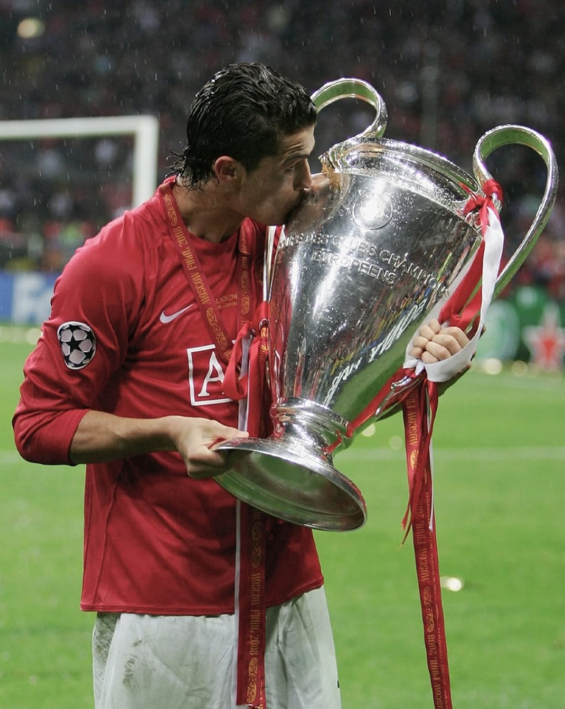Ronaldo scored a total of 42 goals in all competitions during the 2007-08 season, his most prolific campaign during his time in England. Ahead of the 2008-09 season,on 7 July, Ronaldo underwent ankle surgery which kept him out of action for 10 weeks. Following his return, he scored his 100th goal in all competitions for United with the first of two free kicks in a 5-0 win against Stoke City on 15 November, which meant he had now scored against all 19 opposition teams in the Premier League at the time. At the close of 2008,Ronaldo helped United win the 2008 FIFA Club World Cup in Japan, assisting the final-winning goal against Liga de Quito and winning the Silver Ball in the process. With his 2008 Ballon d'Or and 2008 FIFA World Player of the Year, Ronaldo became United's first Ballon d'Or winner since Best in 1968, and the first Premier League player to be named the FIFA World Player of the Year.
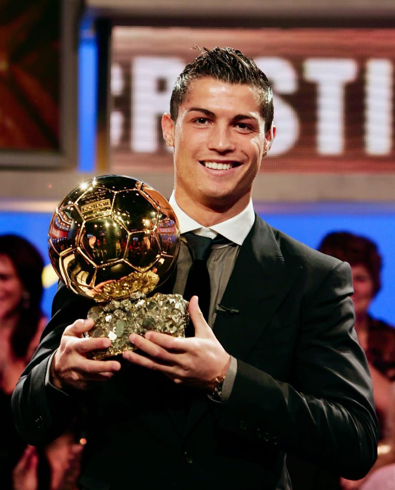His match-winning goal in the second leg against Porto, a 40-yard strike, earned him the inaugural FIFA Puskas Award, presented by FIFA in recognition of the 'Best Goal Of The Year'. He later called it the 'best goal he had ever scored'. United advanced to the final in Rome, where he made little impact in United's 2-0 defeat to Barcelona. Ronaldo ended his time in England with 'Nine Trophies', as United claimed their third successive 'League Title' and a 'Football League Cup'. He finished the campaign with 26 goals in all competitions, 16 goals fewer than the previous season, in four more appearances. His final goal for United came on 10 May 2009 with a free kick in the Manchester derby at Old Trafford. Ahead of the 2009-10 season, Ronaldo joined Real Madrid.
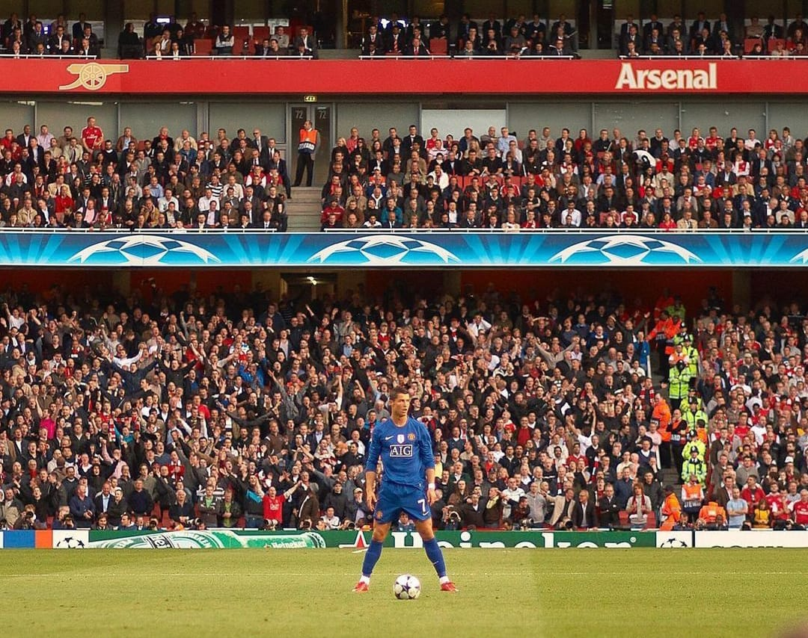On 27 August 2021, Manchester United announced they had reached an agreement with Juventus to re-sign Ronaldo, subject to agreement of personal terms, visa and medical. The transfer was for an initial £12.85 million, with a two-year contract plus an optional year, and was confirmed on 31 August. Ronaldo was given the number 7 shirt after Edinson Cavani agreed to switch to 21. The first 24 hours of Ronaldo's shirt sales was reported to have broken the all-time record following a transfer, overtaking Messi after his move to Paris Saint-Germain. On 2 December, Ronaldo netted two goals in a 3-2 home league win against Arsenal, which saw him surpass 800 career goals. On 23 April, he scored his 100th Premier League goal in a 3-1 defeat to Arsenal. After scoring in the following matches against Chelsea and Brentford, he was named the Premier League Player of the Month for April. On 22 November, Ronaldo's contract was terminated by mutual agreement with immediate effect. On 30 December 2022, Saudi club Al Nassr reached an agreement for Ronaldo to join the club effective 1 January 2023, signing a contract until 2025.
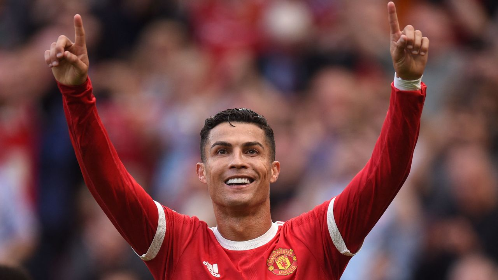Spanish Professional Football Club
Real Madrid

The 2009-10 season, Ronaldo joined Real Madrid for a world record transfer fee at the time of £80 million (€94 million). His contract, which ran until 2015, was worth €11 million per year and contained a €1 billion buy-out clause. At least 80,000 fans attended his presentation at the Santiago Bernabeu, surpassing the 25-year record of 75,000 fans who had welcomed Diego Maradona at Napoli. Since club captain Raul already wore the number 7 (the number Ronaldo wore at United), Ronaldo received the number 9 shirt, which was presented to him by former Madrid player Alfredo Di Stefano.
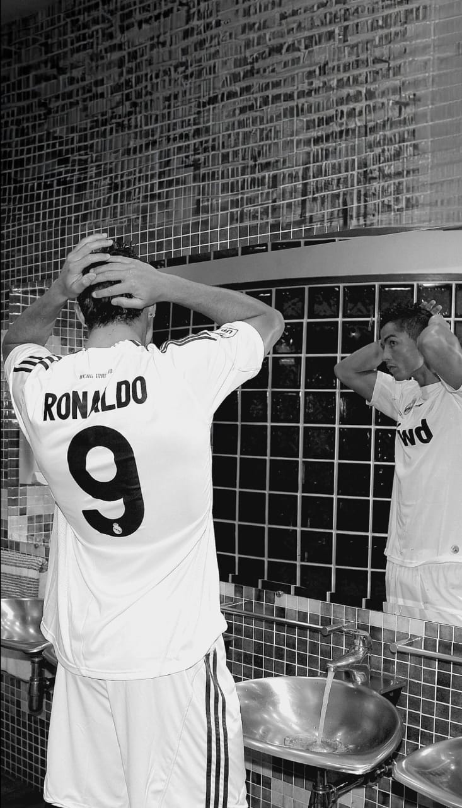Ronaldo made his La Liga debut against Deportivo La Coruna on 29 August, scoring a penalty in a 3-2 home win. He scored in each of his first four league games, the first Madrid player to do so. His first Champions League goals for the club followed with two free kicks in the first group match against Zurich. His strong start to the season was interrupted when he suffered an ankle injury in October while on international duty, which kept him sidelined for seven weeks. A week after his return, he received his first red card in Spain in a match against Almeria. Midway through the season, Ronaldo finished second in the 2009 Ballon d'Or and the 2009 FIFA World Player of the Year awards, behind Messi. He finished the season with 33 goals in all competitions, including a hat-trick in a 4-1 win against Mallorca on 5 May 2010, his first in La Liga, and became Real Madrid's highest goalscorer that season. Although Ronaldo helped amass a club record 96 points in the league, he did not win a trophy in his first season. Following Raul's departure, Ronaldo was given the number 7 shirt for Madrid before the 2010-11 season. Scored the match-winning goal in the 103rd minute of the 2011 Copa del Rey Final, winning his first trophy in Spain. His two goals in the last match of the season against Almeria made him the first player in La Liga to score 40 goals. In addition to the Pichichi Trophy, Ronaldo won the European Golden Shoe for a second time, becoming the first player to win the award in different leagues.
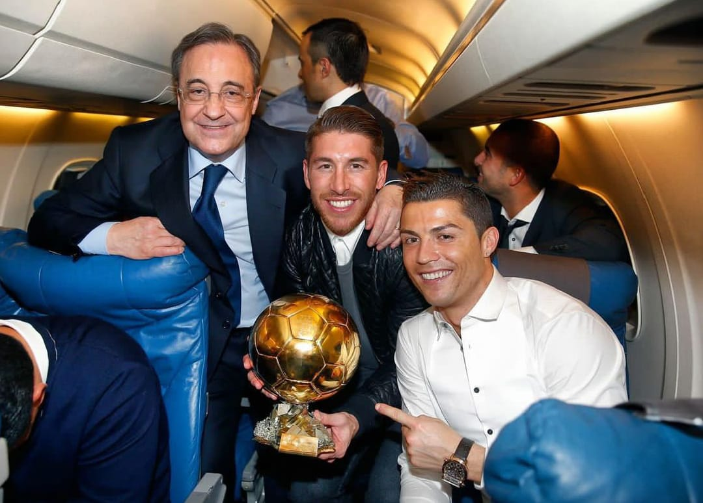Ronaldo found greater team success in the league, helping Madrid win their first league title in four years with a record 100 points. Following a hat-trick against Levante as Madrid further increased their lead over Barcelona, he scored his 100th league goal for Madrid in a 5-1 win over Real Sociedad on 24 March 2012, a milestone he reached in just 92 matches across three seasons, breaking the previous club record held by Ferenc Puskas. Another hat-trick in the Madrid derby against Atletico Madrid brought his total to 40 league goals, equalling his record of the previous season. His final league goal of the season, against Mallorca, took his total to 46 goals, four short of the new record set by Messi, though he became the first player to score against all 19 opposition teams in a single La Liga season. Ronaldo began the 2012-13 season by lifting the 2012 Supercopa de Espana, his third trophy in Spain. After netting a hat-trick, including two penalties, against Deportivo, he scored his first hat-trick in the Champions League in a 4-1 win over Ajax. Four days later, he became the first player to score in six successive Clasicos when he hit a brace in a 2-2 draw at Camp Nou.
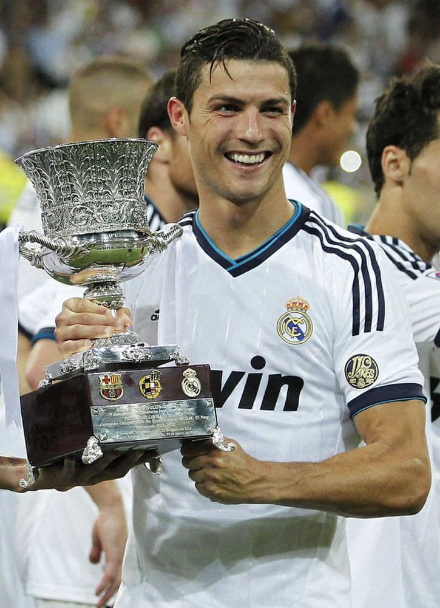The 2012-13 winter break, Ronaldo captained Madrid for the first time in an official match, scoring twice to lift 10-man Madrid to a 4-3 win over Sociedad on 6 January. He subsequently became the first Non-Spanish player in 60 years to captain Real Madrid in El Clasico on 30 January, a match which also marked his 500th club appearance. Three days prior, he had scored his 300th club goal as part of a perfect hat-trick against Getafe. He scored his 200th goal for Madrid on 8 May in a 6-2 win against Malaga, reaching the landmark in 197 games. He helped Madrid reach the 2013 Copa del Rey Final by scoring twice in El Clasico, which marked the sixth successive match at Camp Nou in which he had scored, a club record. In the final, he headed the opening goal of an eventual 2-1 extra time defeat to Atlético, but was shown a red card for violent conduct. In the first knockout round of the Champions League, Ronaldo faced his former club Manchester United for the first time. After scoring equaliser in a 1-1 draw at home, he scored winning goal in a 2-1 win on his first return to Old Trafford. He did not celebrate scoring against his former club as mark of respect.
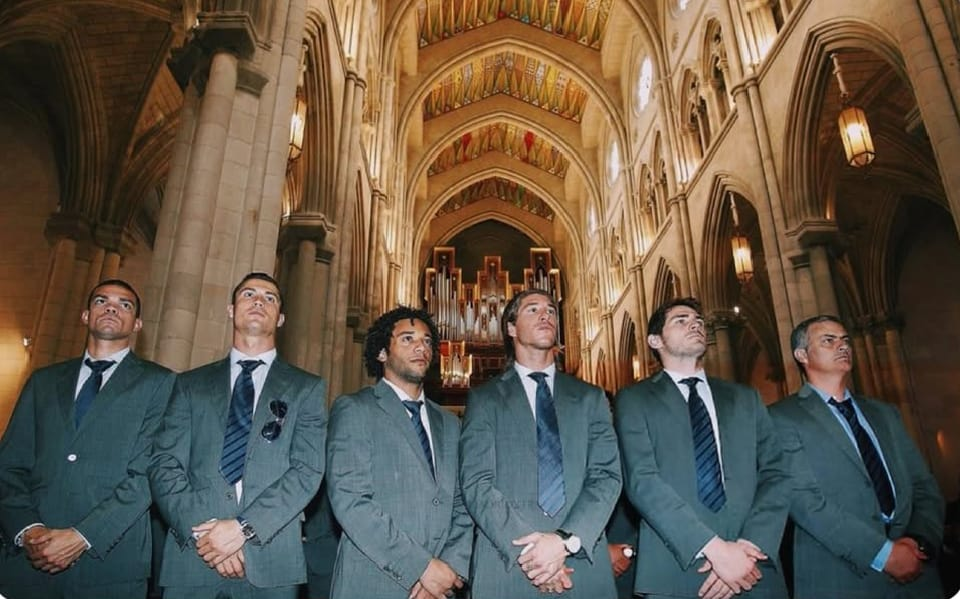At the start of the 2013-14 season, Ronaldo signed a new contract that extended his stay by three years to 2018, with a salary of €17 million net, making him briefly the one of the highest-paid player in football. By late November, Ronaldo had scored 32 goals in 22 matches for both club and country, including hat-tricks against Galatasaray, Sevilla, Real Sociedad, Northern Ireland, and Sweden. He ended 2013 with 69 goals in 59 appearances, his highest year-end goal tally. Together with striker Karim Benzema, they formed an attacking trio popularly dubbed "BBC", an acronym of Bale, Benzema and Cristiano. He received the 2013 FIFA Ballon d'Or and FIFA World Player of the Year award. for the first time in his career. In the Copa del Rey, Ronaldo helped Madrid reach the final by scoring two penalties against Atletico at the Vicente Calderon, the first player scored in every single minute of a 90-minute football match. His continued issues with his knee and thigh caused him to miss the final, where Madrid defeated Barcelona 2-1 to claim the trophy. Ronaldo scored 31 goals in 30 league games, which earned him the Pichichi and the European Golden Shoe, receiving the latter award jointly with Liverpool striker Luis Suarez. Among his haul was his 400th career goal, in 653 appearances for club and country, which came with a brace against Celta Vigo on 6 January; he dedicated his goals to compatriot Eusebio, who had died two days before. A last-minute, back-heeled volley scored against Valencia on 4 May (his 50th goal in all competitions) was recognised as the best goal of the season by the Liga Nacional de Futbol Profesional, which additionally named Ronaldo the Best Player in La Liga.
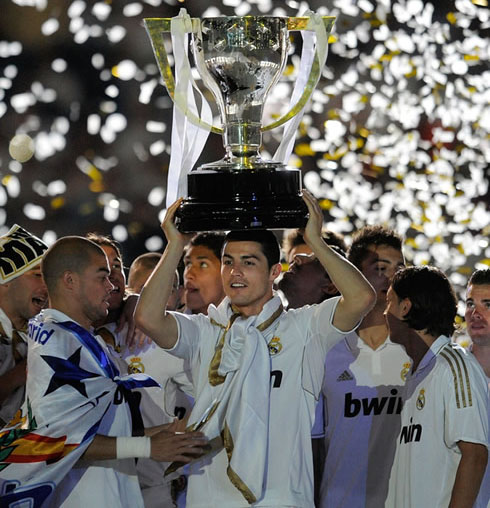During the 2014-15 season, Ronaldo set a new personal best of 61 goals, starting with both goals in Madrid's 2-0 win over Sevilla in the UEFA Super Cup. His record 23rd La Liga hat-trick, scored against Celta Vigo on 6 December, made him the fastest player to reach 200 goals in La Liga, reaching the milestone in 178th matches. After winning the 2014 FIFA Club World Cup, Ronaldo received the 2014 Ballon d'Or, joining Johan Cruyff, Michel Platini and Marco van Basten as a three-time recipient. On 5 April, he scored five goals in a game for the first time in his career, including an eight-minute hat-trick, in a 9-1 rout of Granada. His 300th goal for his club followed three days later in a 2-0 win against Rayo Vallecano. Subsequent hat-tricks against Sevilla, Espanyol and Getafe took his number of hat-tricks for Madrid to 31, surpassing Di Stefano's club record of 28. He finished the season with 48 goals, winning a second consecutive Pichichi and the European Golden Shoe for a record fourth time.
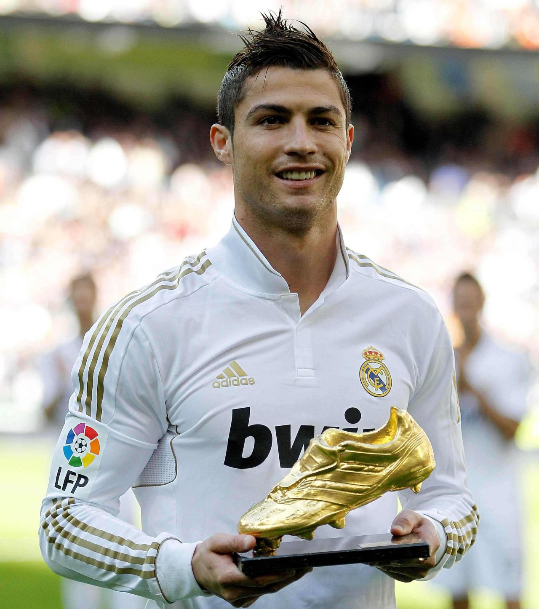At the start of his seventh season at Madrid, the 2015-16 campaign, Ronaldo became the club's all-time top scorer, first in the league and then in all competitions. Ronaldo also became the all-time top scorer in the Champions League with a hat-trick in the first group match against Shakhtar Donetsk, having finished the previous season level with Messi on 77 goals. Two goals against Malmo FF in a 2-0 away win on 30 September saw him reach the milestone of 500 career goals for club and country. He subsequently became the first player to score double figures in the competition's group stage, setting the record at 11 goals, including another four-goal haul againstMalmo FF. For the sixth successive year, he ended the season having scored over 50 goals across all competitions. For his efforts during the season, he received the UEFA Best Player in Europe Award for a second time. Ronaldo missed Madrid's first three matches of the 2016-17 season, including the 2016 UEFA Super Cup against Sevilla, as he continued to rehabilitate the knee injury he suffered against France in the Euro 2016 final. On 15 September, he did not celebrate his late free kick equaliser against Sporting CP in the Champions League, with Ronaldo stating post match that "they made me who I am" On 15 December, Ronaldo scored his 500th club career goal in the 2-0 win over Club America in the semi-finals of the 2016 FIFA Club World Cup. He then scored a hat-trick in the 4-2 win over Japanese club Kashima Antlers in the final. Ronaldo finished the tournament as top scorer with four goals and was also named player of the tournament. He won the 2016 Ballon d'Or, his fourth, and the inaugural 2016 The Best FIFA Men's Player, a revival of the former FIFA World Player of the Year, largely owing to his success with Portugal in winning Euro 2016.
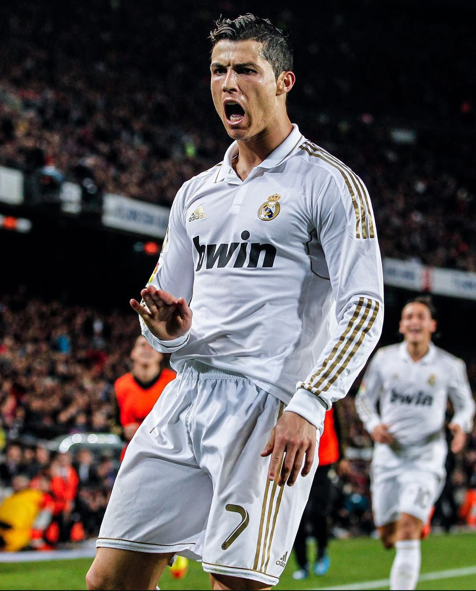In the 2016-17 UEFA Champions League quarter-finals against FC Bayern in April, Ronaldo scored both goals in a 2-1 away win which saw him make history by becoming the first player to reach 100 goals in UEFA club competition. In the second leg of the quarter-finals, Ronaldo scored a 'perfect' hat-trick and reached his 100th Champions League goal, becoming the first player to do so as Madrid again defeated Bayern 4-2 after extra-time. On 2 May, Ronaldo scored another hat-trick as Madrid defeated Atletico 3-0 in the Champions League semi-final first leg. On 17 May, Ronaldo overtook Jimmy Greaves as the all-time top scorer in the top five European leagues, scoring twice against Celta de Vigo. He finished the season with 42 goals in all competitions as he helped Madrid to win their first La Liga title since 2012. In the Champions League Final, Ronaldo scored two goals in a 4-1 victory over Juventus to take him to 12 goals for the season, making him the competition's top goalscorer for the sixth straight season, as well as the first player to score in three finals in the Champions League era; the second goal was the 600th of his senior career. Madrid also became the first team to win back-to-back finals in the Champions League era.
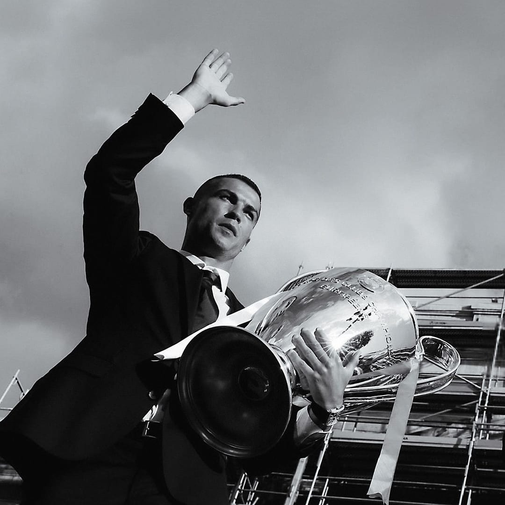On 23 October, his performances throughout 2017 saw him awarded The Best FIFA Men's Player award for the second consecutive year. On 6 December, he became the first player to score in all six Champions League group stage matches with a curling strike at home to Dortmund. A day later, Ronaldo won the 2017 Ballon d'Or, receiving his fifth-time award on the Eiffel Tower in Paris. On 16 December, he scored a free kick winner, as Madrid won their second Club World Cup in a row by beating Gremio in the final. On 3 March 2018, he scored two goals in a 3-1 home win over Getafe, his first being his 300th La Liga goal in his 286th appearance, making him the fastest player to reach this landmark and only the second player to do so after Messi. On 18 March, he reached his 50th career hat-trick, scoring four goals in a 6-3 win against Girona. On 3 April, Ronaldo scored the first two goals in a 3-0 away win against Juventus in the quarter-finals of the 2017-18 UEFA Champions League, with his second goal being an acrobatic bicycle kick. Described as a "PlayStation goal" by Juventus defender Andrea Barzagli, with Ronaldo's foot approximately 7 ft (2.31 m) off the ground, it garnered him a standing ovation from the opposing fans in the stadium as well as a plethora of plaudits from peers, pundits and coaches.
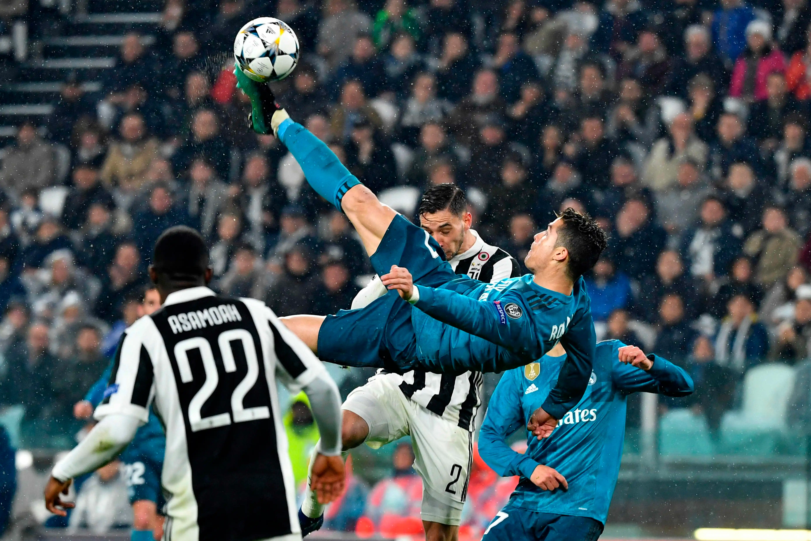On 11 April, he scored in the second leg at home to Juventus, a 98th-minute injury time penalty in a 3-1 defeat, meaning Madrid advanced 4-3 on aggregate. It was his tenth goal against Juventus, a Champions League record against a single club. In the final on 26 May, Madrid defeated Liverpool 3-1, winning Ronaldo his fifth Champions League title, the first player to do so. He finished as the top scorer of the tournament for the sixth consecutive season with 15 goals. After the final, Ronaldo referred to his time with Madrid in the past tense, sparking speculation that he could leave the club. He left without a proper goodbye, so madrid fan's are chanting "Ronaldo Ronaldo Ronaldo".
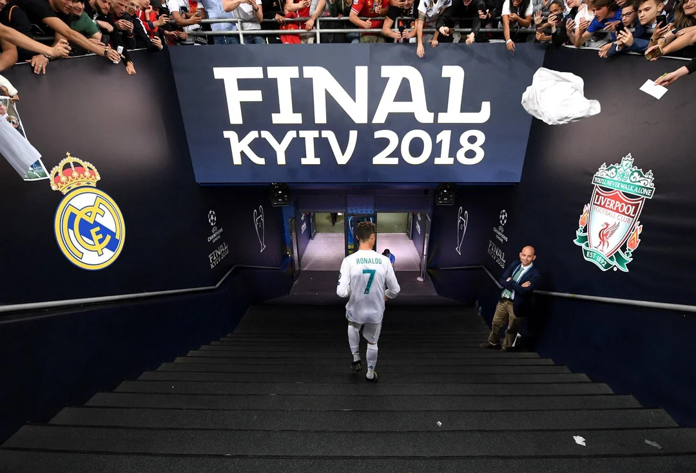Italian Professional Football Club
Juventus
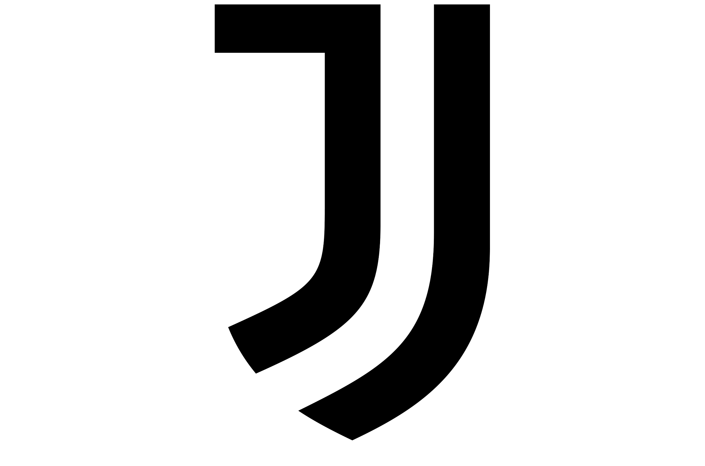Despite months of negotiation to sign a new Real Madrid contract, on 10 July 2018, Ronaldo signed a four-year contract with Italian club Juventus after completing a €100 million transfer, which included an additional €12 million in other fees and solidarity contributions to Ronaldo's youth clubs. The transfer was the highest ever for a player over 30 years old, and the highest paid by an Italian club. On 18 August, Ronaldo made his debut in a 3-2 away win against Chievo Verona. On 16 September, Ronaldo scored his first two goals for Juventus in his fourth appearance in a 2-1 home win over Sassuolo in Serie A; his second goal was the 400th league goal of his career. On 19 September, in his first Champions League match for Juventus, against Valencia, he was sent off in the 29th minute for "violent conduct", his first red card in 154 tournament appearances. Ronaldo became the first player in history to win 100 Champions League matches. Ronaldo won his first trophy with the club on 16 January 2019, the 2018 Supercoppa Italiana, after he scored the only goal from a header against AC Milan.
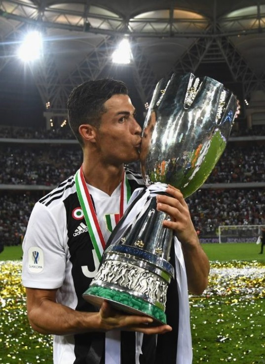On 12 March, Ronaldo scored a hat-trick in a 3-0 home win against Atletico in the second leg of the Champions League round of 16, helping Juventus overcome a two-goal deficit to reach the quarter-finals. The following month, he scored his 125th goal in the competition, opening the scoring in a 1-1 away draw in the quarter-final first leg against Ajax on 10 April. In the second leg in Turin on 16 April, he scored the opening goal, but Juventus eventually lost the match 2-1 and were eliminated from the competition. On 20 April, Ronaldo played in the scudetto clinching game against Fiorentina, as Juventus won their eighth successive title after a 2-1 home win, thereby becoming the first player to win league titles in England, Spain and Italy. On 27 April, he scored his 600th club goal, the equaliser in a 1-1 away draw against Derby d'Italia rivals Inter Milan. Ending his first Serie A campaign with 21 goals and 8 assists, Ronaldo won the inaugural Serie A award for Most Valuable Player. On 1 October, he reached several milestones in Juventus's 3-0 Champions League group stage win over Bayer Leverkusen: he scored in a 14th consecutive season, equalling Raul and Messi's record; he broke Iker Casillas record for most Champions League wins of all time, and equalled Raul's record of scoring against 33 different opponents.On 18 December, Ronaldo leapt to a height of 8 ft 5 in (2.57 m), higher than the crossbar, to head the winning goal in a 2-1 away win against Sampdoria. He scored his first Serie A hat-trick on 6 January 2020, in a 4-0 home win against Cagliari. His 56th career hat-trick, he became only the second player after Alexis Sanchez to score hat-tricks in the Premier League, La Liga and Serie A. On 22 February, Ronaldo scored for a record-equalling 11th consecutive league game, alongside Gabriel Batistuta and Fabio Quagliarella, in his 1,000th senior professional game, a 2-1 away win against SPAL.
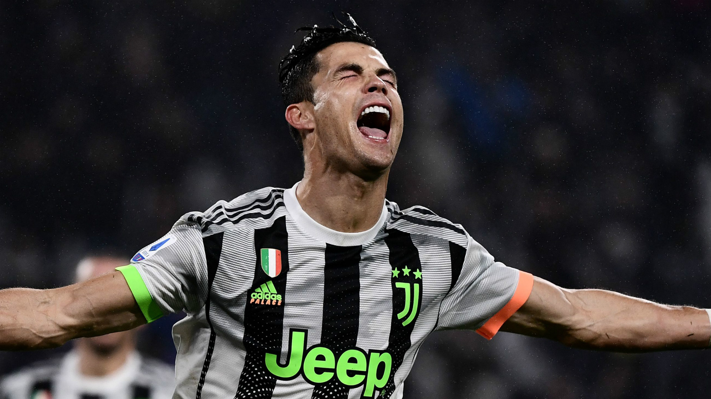On 22 June, he scored a penalty in a 2-0 away win over Bologna, overtaking Rui Costa to become the highest scoring Portuguese player in Serie A history. On 4 July, he scored his 25th league goal from a free kick in a 4-1 home win over rivals Torino, becoming the first Juventus player to achieve this milestone since Omar Sivori in 1961. On 20 July, Ronaldo scored twice in a 2-1 home win over Lazio; his first goal was his 50th in Serie A. He became the second-fastest player to reach this landmark, after Gunnar Nordahl, and the first player in history to reach 50 goals in the Premier League, La Liga and Serie A, and becoming the second player after Edin Dzeko to score 50 goals in three of Europe's top five major leagues. With his brace, he also reached 30 league goals for the season, becoming just the third player (after Felice Borel in 1934 and John Hansen in 1952) in Juventus's history to reach that milestone in a season. Moreover, he became the oldest player, at the age of 35 years and 166 days, to score over 30 goals in one of the five top European leagues since Ronnie Rooke with Arsenal in 1948. On 26 July, Ronaldo scored the opening goal in a 2-0 home win over Sampdoria as Juventus were crowned Serie A champions for a ninth consecutive time. He finished his second league campaign with 31 goals, making him the second-highest goalscorer in the league behind only European Golden Shoe winner Ciro Immobile, with 36 goals. On 7 August, Ronaldo scored a brace in a 2-1 home win against Lyon in the second leg of the Champions League round of 16, which saw him finish the season with 37 goals in all competitions; the tally allowed him to break Borel's club record of 36 goals in a single season.

On 2 March, he scored a goal in a 3-0 win over Spezia in his 600th league match, to become the first player to score at least 20 goals in 12 consecutive seasons in the top five leagues of Europe. On 14 March, he scored his 57th career hat-trick in a 3-1 away win over Cagliari. On 12 May, Ronaldo scored a goal in a 3-1 away win over Sassuolo to reach his 100th goal for Juventus in all competitions on his 131st appearance, becoming the fastest Juventus player to achieve the feat. With Juventus's victory in the 2021 Coppa Italia Final on 19 May, Ronaldo became the first player in history to win every major domestic trophy in England, Spain and Italy. Ronaldo ended the season with 29 league goals, winning the Capocannoniere award for highest goalscorer and becoming the first footballer to finish as top scorer in the English, Spanish and Italian leagues. On 26 August, Ronaldo leaves Juventes and it was confirmed that Juventes rivals Manchester United, Ronaldo's former club, were in advanced talks to sign him, while former manager Alex Ferguson and several ex-teammates had been in contact to persuade him to re-sign for United.
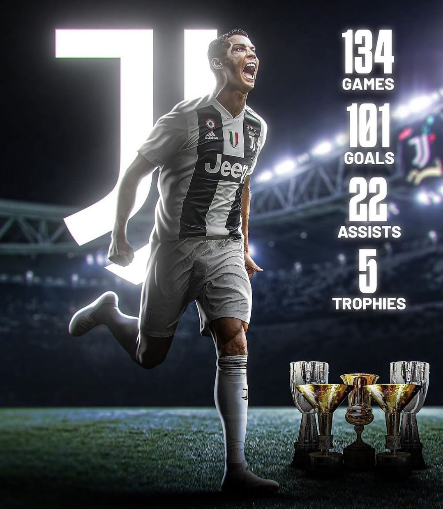Saudi Football Club
Al-Nassr
 On 30 December 2022, Saudi club Al Nassr reached an agreement for Ronaldo to join the club
effective 1 January 2023, signing a contract until 2025.
As reported by Fabrizio Romano of The Guardian, Ronaldo received the highest football salary in
history, worth €200 million per year;
this included an annual guaranteed football salary of €90 million, with commercial and
sponsorship deals included bringing his total annual salary
to €200 million. He was also reportedly paid a signing-on bonus in the region of €100 million.
According to media reports, Ronaldo rejected a move to
Major League Soccer club Sporting Kansas City to join Al Nassr.On 19 January,
Ronaldo played for the first time since transferring to
Saudi Arabia, in an exhibition game featuring a combined team of Riyadh's Al Nassr and Al
Hilal players against
Paris Saint-Germain(PSG). Ronaldo scored twice in a 5-4 loss.He made his debut for
Al Nassr on 22 January,
as club captain, playing the full 90 minutes of a 1-0 win over Al-Ettifaq and scored his first
goal in a 2-2 draw against Al-Fateh
by converting a last-minute penalty. On 9 February, Ronaldo scored all four goals in a 4-0 win
over Al Wehda,
his first goal of the match being his 500th career league goal.
On 30 December 2022, Saudi club Al Nassr reached an agreement for Ronaldo to join the club
effective 1 January 2023, signing a contract until 2025.
As reported by Fabrizio Romano of The Guardian, Ronaldo received the highest football salary in
history, worth €200 million per year;
this included an annual guaranteed football salary of €90 million, with commercial and
sponsorship deals included bringing his total annual salary
to €200 million. He was also reportedly paid a signing-on bonus in the region of €100 million.
According to media reports, Ronaldo rejected a move to
Major League Soccer club Sporting Kansas City to join Al Nassr.On 19 January,
Ronaldo played for the first time since transferring to
Saudi Arabia, in an exhibition game featuring a combined team of Riyadh's Al Nassr and Al
Hilal players against
Paris Saint-Germain(PSG). Ronaldo scored twice in a 5-4 loss.He made his debut for
Al Nassr on 22 January,
as club captain, playing the full 90 minutes of a 1-0 win over Al-Ettifaq and scored his first
goal in a 2-2 draw against Al-Fateh
by converting a last-minute penalty. On 9 February, Ronaldo scored all four goals in a 4-0 win
over Al Wehda,
his first goal of the match being his 500th career league goal.
On 25 February, he scored his second hat-trick for the club, helping his side to a 3-0 away league victory against Damac, in this process, he became the first player in the history of Saudi Pro League to score a hat-trick in the first half of a match. Ronaldo was awarded the Player of the Month award for February after scoring eight goals and assisting twice. Ronaldo spent another season without winning a league title, as Al Nassr finished second in the league in the 2022-23 season.Ronaldo's signing for Al-Nassr resulted in increased popularity both domestically and internationally of the Saudi Pro League, with various European players such as Karim Benzema, Sadio Mane, N'Golo Kante, Ruben Neves, Riyad Mahrez, Roberto Firmino andNeymar moving to the Saudi Pro League during the summer transfer window, crediting Ronaldo as one of the main factors for moving to the league.
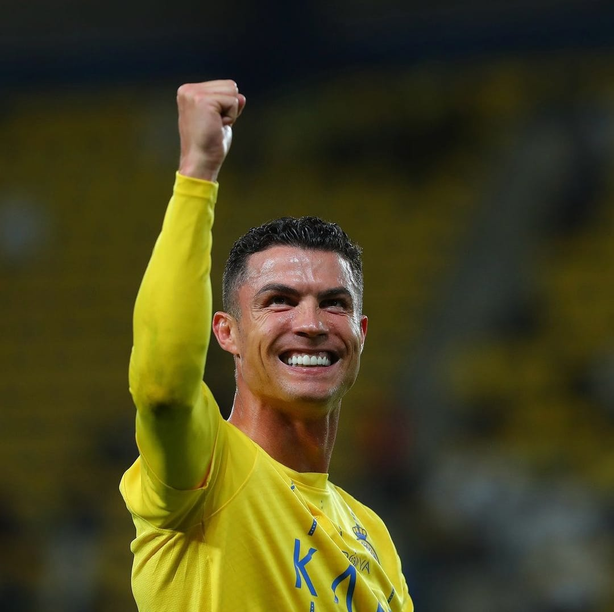He scored his first goal of the 2023-24 season in a 4-1 win over Union Monastirienne in the Arab Club Champions Cup on 31 July. In the semi-finals on 9 August, Ronaldo scored the only goal of a win over Al-Shorta, converting a penalty to help Al Nassr reach their first ever Arab Club Champions Cup final. In the final on 12 August, Ronaldo scored both goals for a ten-man Al Nassr as they defeated rivals Al-Hilal 2-1 after extra time to win the competition for the first time in their history. Ronaldo was awarded the competition's top scorer award having scored six goals in the competition.
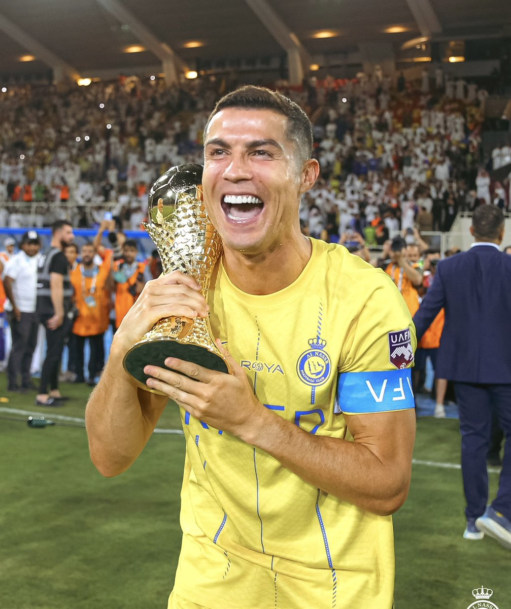On 18 August, Ronaldo made his first league appearance of the season in a 2-0 defeat to Al-Taawoun, and scored his first hat-trick of the season in a 5-0 away win against Al-Fateh a week later. On 29 August, Ronaldo scored twice and assisted once in a 4-0 win against rivals Al-Shabab. Ronaldo was awarded the SPL Player of the Month award for August after scoring five goals and assisting twice. On 2 September, he scored a goal in Al-Nassr's 5-1 away win against Al-Hazem, his 850th senior career goal. On 19 September, Ronaldo made his AFC Champions League debut, starting in a 2-0 win over Persepolis, becoming the first player in football history to record 1000 career games unbeaten (776 wins and 224 draws). Ronaldo received the SPL Player of the Month award for a second consecutive month after recording five goals and three assists in September. On 2 October, he scored his first AFC Champions League goal in the home fixture against Istiklol, the equaliser in an eventual 3-1 win. On 8 December, Ronaldo made his 1200th senior career appearance for club and country, scoring the first goal of a 4-1 win over Al-Riyadh. On 30 December, Ronaldo closed the 4-1 win over Al Taawon. At the close of the year, Ronaldo scored 54 goals in all competitions for Al-Nassr and Portugal, making him the outright top scorer in 2023. His 54 goals was the most goals he had scored in a calendar year since 2016, and sixth time he achieved that feat in his career (2011, 2013, 2014, 2015, 2016 and 2023).
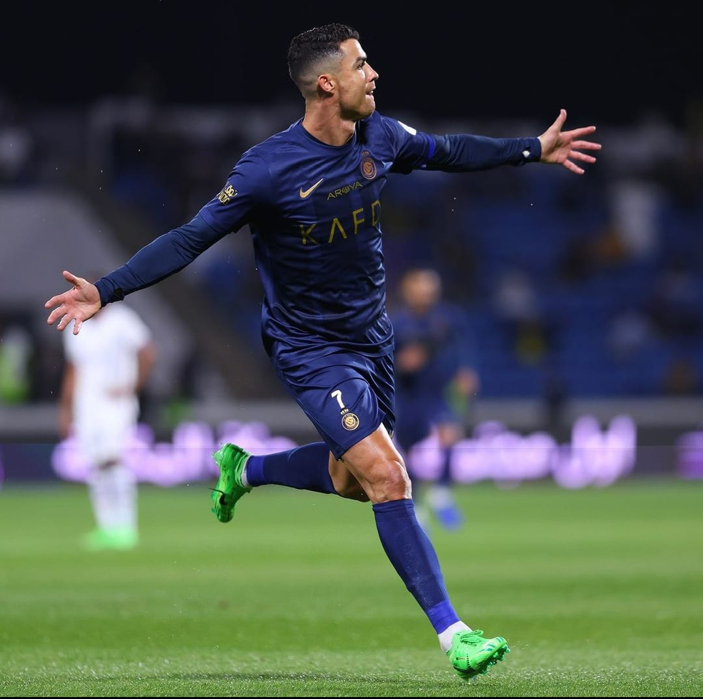In the first knockout round of the AFC Champions League, Ronaldo faced fellow Saudi Arabian club Al-Fayha. After scoring the winner in a 1-0 win away in his 1000th club appearance, he scored the winning goal in a 2-0 win at home, helping Al-Nassr reach the quarter-finals of the competition. On 11 March, Ronaldo became the first football player to achieve 800 career wins following a match against Al Ain in the second leg of the AFC Champions League quarter-finals. Four days later, Ronaldo scored his 50th goal for Al-Nassr, netting a penalty in a narrow 1-0 win over rivals Al-Ahli. On 4 May, he clinched his 66th career hat-trick in a 6-0 victory over Al Wehda, notching his 890th goal overall. On 27 May 2024, in Al Nassr's home fixture against Al-Ittihad, Ronaldo scored his 34th and 35th league goals of the campaign, surpassing Abderrazak Hamdallah's record for the most goals scored in single Saudi Pro League season. He became the first footballer to finish as top scorer in four different leagues, English, Spanish, Italian and Saudi leagues.
International Career:
Portugal
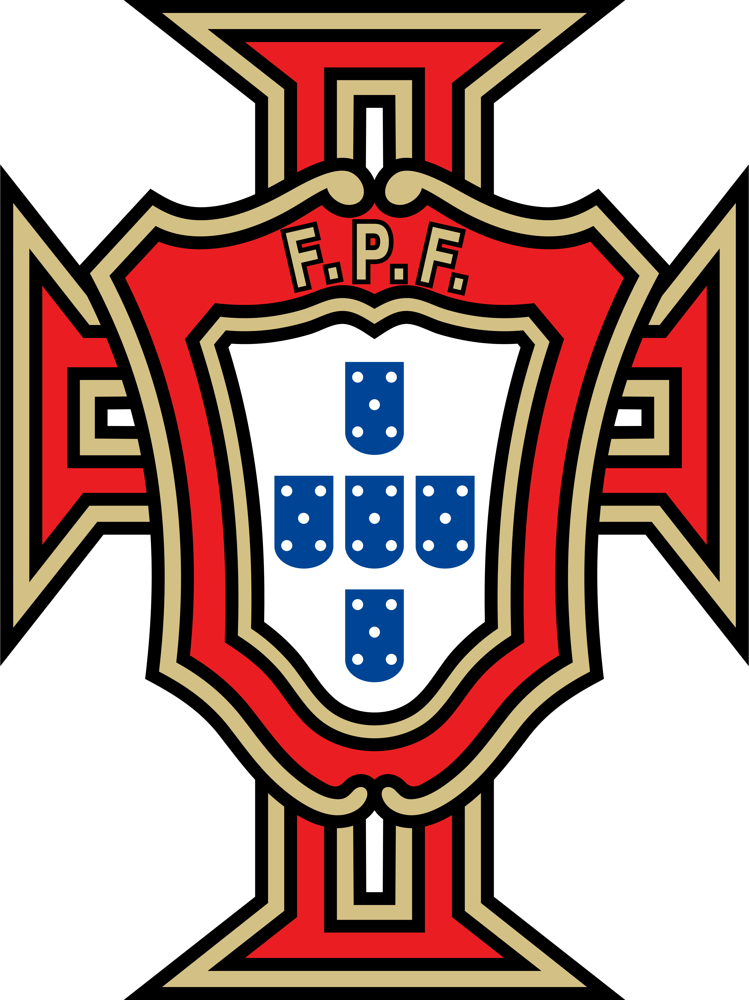Ronaldo began his international career with Portugal under-15 in 2001. During his international youth career, Ronaldo would represent the under-15, under-17, under-20, under-21 and under-23 national sides, amassing 34 youth caps and scoring 18 goals overall.Aged 18, Ronaldo made his first senior appearance for Portugal in a 1-0 win over Kazakhstan on 20 August 2003, coming on as a half-time substitute for Luis Figo. Ronaldo was Portugal's second-highest scorer in their qualification group for the 2006 FIFA World Cup with seven goals.At the age of 21 years and 132 days, Ronaldo became the youngest ever goalscorer for Portugal at a World Cup finals.One day after turning 22, Ronaldo captained Portugal for the first time in a friendly game against Brazil on 6 February 2007, as requested by Portuguese Football Federation (FPF) president Carlos Silva, who had died two days earlier. Ahead of Euro 2008, he was given the number 7 shirt for the first time.
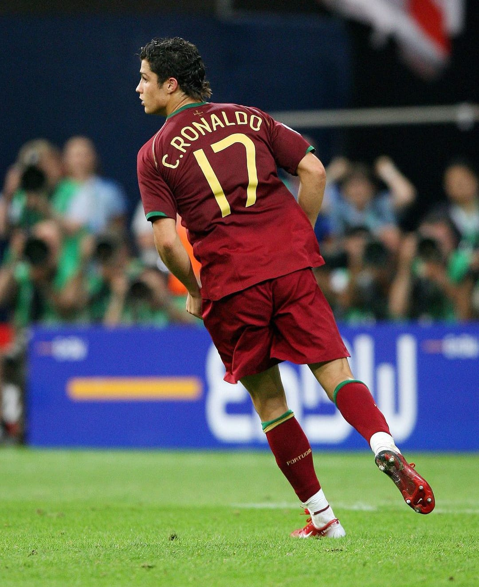After Portugal's unsuccessful performance at Euro 2008, Luiz Felipe Scolari was replaced as coach by Carlos Queiroz, formerly the assistant manager at United. Queiroz made Ronaldo the squad's permanent captain in July 2008. Ronaldo failed to score a single goal in the qualification for the 2010 World Cup, as Portugal narrowly avoided a premature elimination from the tournament with a play-off victory over Bosnia and Herzegovina. In the group stage of the World Cup, he was named man of the match in all three matches, against Ivory Coast, North Korea and Brazil. His only goal of the tournament came in their 7-0 rout of North Korea, which marked his first international goal in 16 months. Portugal's World Cup ended with a 1-0 loss against eventual champions Spain in the round of 16. Ronaldo scored seven goals in qualifications for Euro 2012, including two strikes against Bosnia and Herzegovina in the play-offs, to send Portugal into the tournament, where they were drawn in a "group of death". In the last group stage game against the Netherlands, Ronaldo scored twice to secure a 2-1 win. He scored a header in the quarter-final against the Czech Republic to give his team a 1-0 win. In both games against the Netherlands and the Czech Republic he was named man of the match. After the semi-finals against Spain ended scoreless, Portugal were eliminated in the penalty shoot-out. Ronaldo did not take a penalty as he had been slated to take the unused fifth slot.
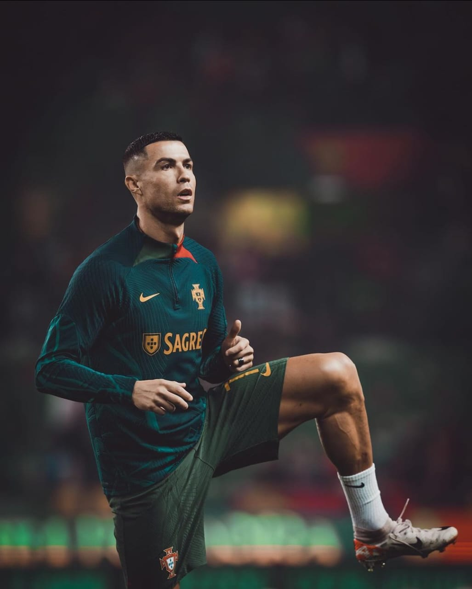During the qualification for the 2014 World Cup, Ronaldo scored a total of eight goals. A qualifying match on 17 October 2012, a 1-1 draw against Northern Ireland, earned him his 100th cap. His first international hat-trick also came against Northern Ireland, when he scored three times in a 15-minute spell of a 4-2 qualifying win on 6 September 2013.Ronaldo subsequently scored twice in a 5-1 friendly win over Cameroon on 5 March 2014 to become his country's all-time top scorer.His 50th international goal made him the first Portuguese to play and score in three World Cups. Ronaldo scored five goals, including a hat-trick against Armenia, in the qualification for Euro 2016. With the only goal in another win over Armenia on 14 November 2014, he reached 23 goals in the UEFA European Championship, including qualifying matches, to become the competition's all-time leading goalscorer.
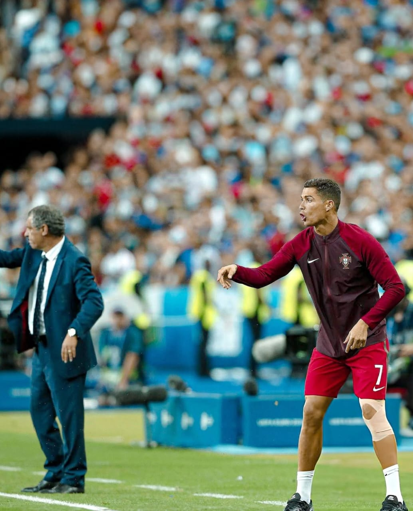In the latter match, he overtook Figo as Portugal's most capped player with his 128th international appearance, which ended scoreless after he missed a penalty in the second half. With two goals in the last match of the group stage, a 3-3 draw against Hungary, Ronaldo became the first player to score in four European Championships, having made a record 17 appearances in the tournament. In the final against France, Ronaldo was forced off after just 25 minutes following a challenge from Dimitri Payet, despite multiple treatments and attempts to play on, he was stretchered off the pitch and replaced by Quaresma. During extra time, substitute Eder scored in the 109th minute to earn Portugal a 1-0 victory. As team captain, Ronaldo lifted the trophy in celebration of his country's first triumph in a major tournament. He was awarded the Silver Boot as the joint second-highest goalscorer, with three goals and three assists, and was named to the team of the tournament for the third time in his career.Following the Euro 2016 success, Ronaldo played his first professional match on his home island of Madeira on 28 March 2017 at age 32, opening a 2-3 friendly defeat to Sweden at the Estadio dos Barreiros. With the goal, he tied with Miroslav Klose on 71 goals as the third-highest scoring European in international football.
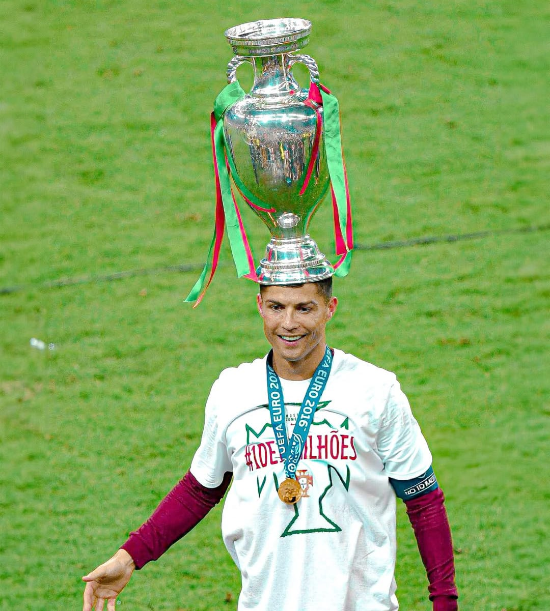On 31 August 2017, Ronaldo scored a hat-trick in a 5-1 win in a 2018 World Cup qualifying match over the Faroe Islands, which saw him overtake Pele and equal Hussein Saeed as the joint-fifth-highest goalscorer in international football with 78 goals. These goals brought his tally in the World Cup qualifiers to 14, equalling Predrag Mijatovic's record for most goals in a single UEFA qualifying campaign, and also saw him break the record for the most goals scored in a European qualifying group, overtaking the previous record of 13 goals set by David Healy and Robert Lewandowski. Ronaldo's hat-trick took his World Cup qualifying goals total to 29, making him the highest scorer in UEFA qualifiers, ahead of Andriy Shevchenko, and the highest goalscorer in World Cup qualifying and finals matches combined with 32 goals, ahead of Miroslav Klose. Ronaldo later added to this tally by scoring a goal against Andorra in a 2-0 win. On 15 June 2018, Ronaldo became the oldest player to score a hat-trick in a FIFA World Cup match, helping Portugal secure a 3-3 draw against Spain in their opening match. He became the first Portuguese player to score a goal in four World Cups and one of four players of any nationality to do so. On 20 June, Ronaldo scored the only goal in a 1-0 win against Morocco, breaking Puskas record as the highest European goalscorer of all time, with 85 international goals. For his performances in the tournament, Ronaldo was named in the World Cup Dream Team. After the World Cup, Ronaldo missed six international matches, including the entire league phase of the 2018-19 UEFA Nations League, but played for hosts Portugal in the inaugural Nations League Finals in June 2019. In the semi-finals on 5 June, he scored a hat-trick against Switzerland to reach the final. Upon scoring the opening goal, he became the first player to score in 10 consecutive international competitions, breaking the record he previously shared with Ghana's Asamoah Gyan. In the final of the tournament Portugal defeated the Netherlands 1-0.

On 9 October, he scored the opening goal in a 3-0 friendly win over Qatar at the Estadio Algarve, with his 181st international appearance, he also overtook Sergio Ramos's record for the most international caps received by a European player. In the following match against Luxembourg on 12 October, also played at the Estadio Algarve, Ronaldo scored a hat-trick in a 5-0 win for Portugal, and became the first player to score 10 hat-tricks in men's international football. Ronaldo was named in Portugal's squad for the 2022 FIFA World Cup in Qatar, making it his fifth World Cup. On 24 November, in Portugal's opening match against Ghana Ronaldo scored a penalty kick and became the first male player to score in five different World Cups. Ronaldo was named in Portugal's squad for the UEFA Euro 2024 qualifiers against Liechtenstein and Luxembourg. On 23 March, Ronaldo scored a brace in a 4-0 win over Liechtenstein; with his 197th international appearance, he overtook Al-Mutawa's record and became the most capped male footballer of all time. On 20 June, Ronaldo made his 200th appearance for his national team, scoring the only goal of an away win over Iceland, in the Euro qualifiers, as he became the first player in the history of men's international football to make 200 appearances for his country. 13 October, Ronaldo scored a brace in a 3-2 win over Slovakia, leading Portugal to qualify for Euro 2024, marking the nation's fastest qualification to a major tournament in their history. On 16 October, Portugal secured first place in their group, following a 5-0 away victory over Bosnia and Herzegovina, with Ronaldo scoring twice. The landmark goals saw him score in more than 100 goals in each of the last three decades (2000s, 2010s, 2020s). his start in Portugal's UEFA Euro 2024 opener against the Czech Republic, Ronaldo became the first player to feature in six European Championships. 5 September 2024, he scored his 900th career goal in a 2-1 victory over Croatia in UEFA Nations League.
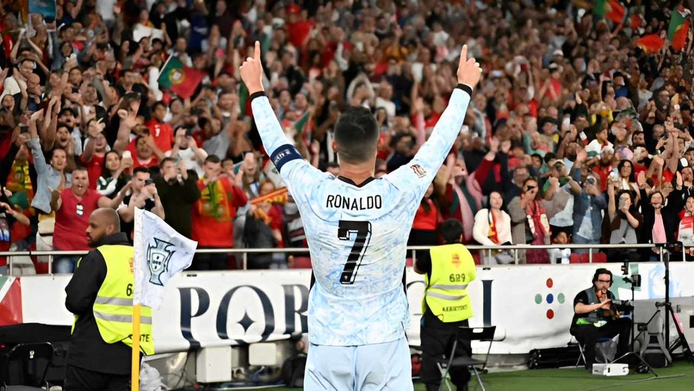His Rivalry
Lionel Messi
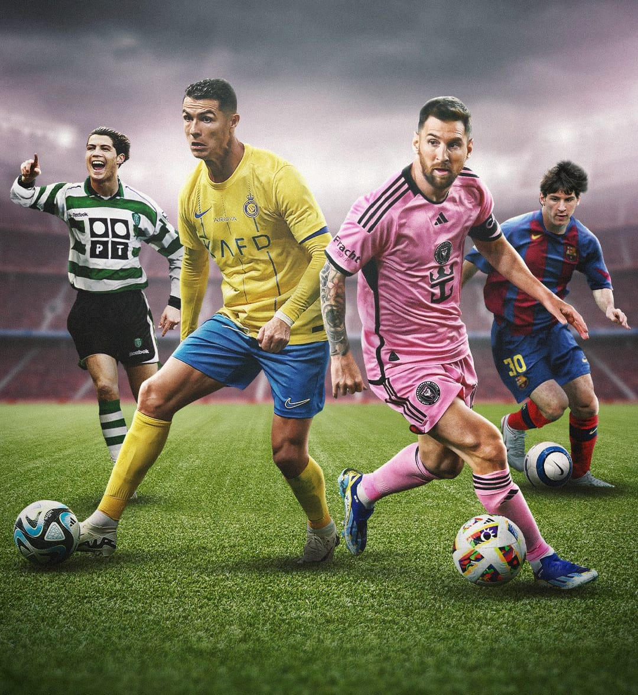 Both Cristiano Ronaldo and Lionel Messi have scored in multiple UEFA Champions League finals and have regularly broken the 50-goal barrier in a single season. Sports journalists regularly weigh the individual merits of both players in an attempt to argue who they believe is the best player in modern football or in the history of the game. Part of the debate revolves around the contrasting personalities of the two players, as Ronaldo is sometimes depicted as an arrogant and theatrical showoff, while Messi is portrayed as a shy, humble character. In a 2012 interview, Ronaldo commented on the rivalry, saying: "I think we push each other sometimes in the competition, this is why the competition is so high". "Alex Ferguson, Ronaldo's manager during his time at Manchester United, opined: "I don't think the rivalry against each other bothers them. I think they have their own personal pride in terms of wanting to be the best."
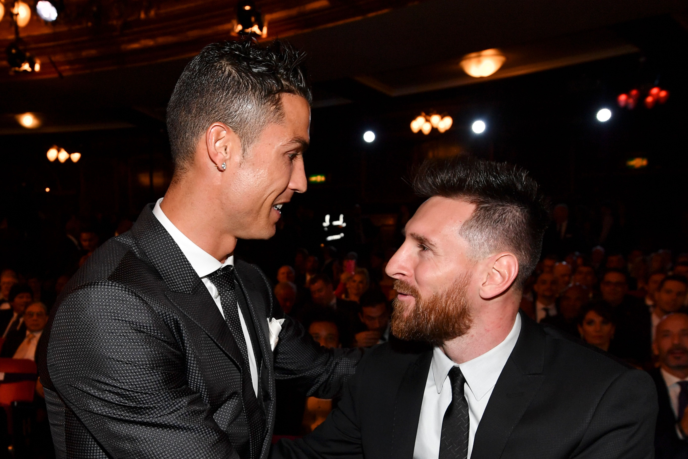In August 2019, Ronaldo and Messi were interviewed while sat next to each other prior to the announcement of the UEFA Men's Player of the Year, with Ronaldo stating: "I pushed him and he pushed me as well. So it's good to be part of the history of football." In September 2023, Ronaldo declared that his rivalry with Messi was "Over", after 36 official fixtures and 15 years of "sharing the stage". After Messi led Argentina to victory in the 2022 FIFA World Cup, a number of football critics, commentators and players have opined that Messi has settled the debate between the two living legends.
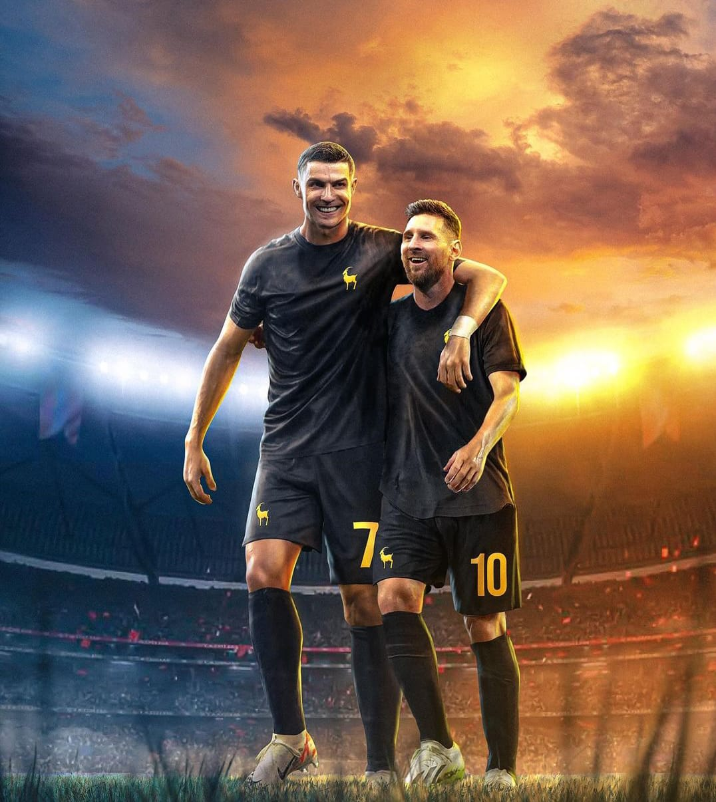